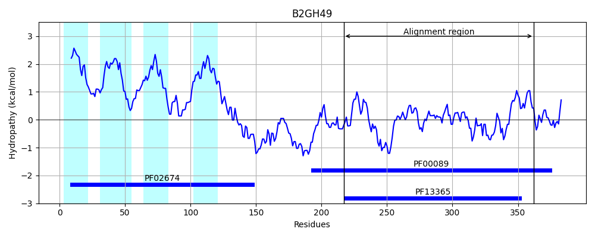
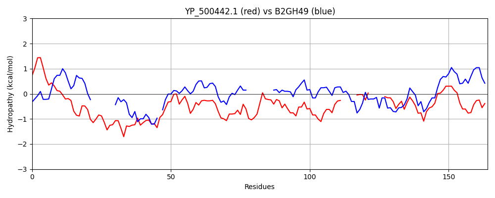

YP_500442.1
Hit Accession: B2GH49
Hit TCID: 9.B.160.1.10
Hit Description: gnl|BL_ORD_ID|1701 gnl|TC-DB|B2GH49|9.B.160.1.10 Putative S1C family peptidase OS=Kocuria rhizophila (strain ATCC 9341 / DSM 348 / NBRC 103217 / DC2201) GN=KRH_04540 PE=4 SV=1
Mach Len: 164
e:0.000172
Query TMS Count : 0
Hit TMS Count: 4
TMS-Overlap Score: 0.000000
Predicted Substrates:None
BLAST Alignment:
| Protein Hydropathy Plots: | |
|---|---|
 |  |
Pairwise Alignment-Hydropathy Plot: | |
|  | |